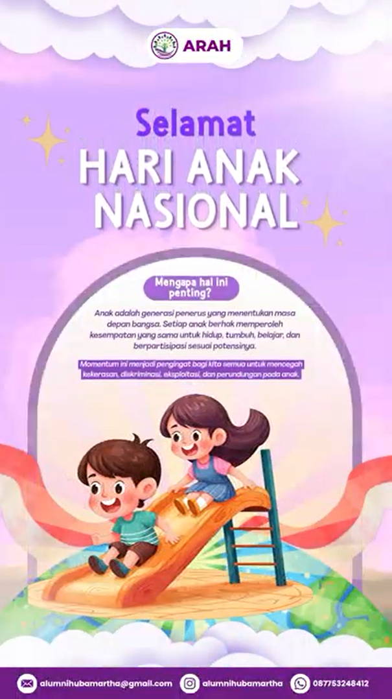
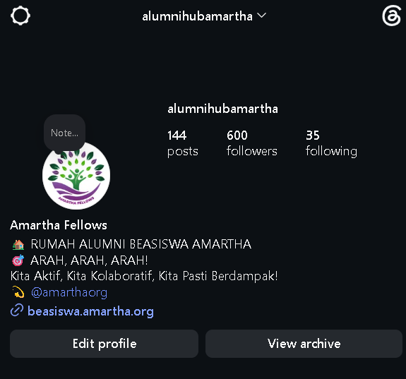

.png)
Divisi Multimedia · 2025/2026
Merangkai cerita,
membangun karya.
Satu periode, banyak cerita. Inilah jejak langkah kami dalam merawat ruang, menyalakan gagasan, dan tumbuh bersama.
Multi
media
GROW
TOGETHER
✦
TOGETHER
✦
0desain dihasilkan
0kategori desain terlaksana
0anggota divisi terlibat
0bulan bertumbuh
01 — Tentang Amartha Fellows
Rumah untuk terhubung, berkolaborasi, dan berdampak.
01Lintas generasi, satu ruang untuk terus terhubung.
02Kolaborasi yang membuka ruang tumbuh bersama.
03Kontribusi nyata untuk masyarakat dan lingkungan.
 ARAHAktif · Kolaboratif · Berdampak
ARAHAktif · Kolaboratif · BerdampakAmartha Fellows adalah komunitas lintas generasi penerima Beasiswa Amartha yang dibentuk sebagai wadah untuk menjaga koneksi, kolaborasi, dan kontribusi berkelanjutan antaralumni. Komunitas ini menjadi ruang strategis untuk memperkuat solidaritas, saling mendukung pengembangan potensi, serta menjadi penggerak perubahan sosial di berbagai sektor masyarakat.
Visi
Membangun ARAH sebagai rumah bagi alumni lintas generasi yang aktif, kolaboratif, dan berdampak dalam bidang pendidikan, pengembangan diri, dan karier.
Misi
- Membangun ruang komunikasi yang terbuka dan suportif bagi alumni lintas angkatan untuk memperkuat ikatan dan membudayakan diskusi yang konstruktif.
- Mendorong kolaborasi dan kepemimpinan partisipatif melalui program-program yang relevan, berkelanjutan, dan selaras dengan minat serta bidang alumni.
- Menghadirkan kontribusi nyata alumni bagi komunitas Amartha dan masyarakat luas melalui aksi kolektif yang berdampak.
- Mengintegrasikan teknologi dan sistem informasi untuk meningkatkan efektivitas komunikasi, dokumentasi, dan pengelolaan kegiatan ARAH.
- Membangun budaya evaluasi dan inovasi berkelanjutan agar ARAH tetap adaptif terhadap perkembangan zaman dan kebutuhan anggota.
ARAH ARAH ARAH!!! KITA AKTIF KITA KOLABORATIF KITA PASTI BERDAMPAK!!!
Fokus Program Divisi Multimedia
Kontribusi pada SDGs
SDG 4 · Pendidikan BerkualitasARAH Belajar memperluas akses edukasi kreatif berbasis digital.
SDG 8 & 12Ecopreneur Stories mendorong usaha inklusif dan praktik berkelanjutan.
SDG 10 & 16Data Nusantara memperkuat inklusi, informasi, dan partisipasi komunitas.
Keterkaitan dengan STEM
Setiap program Divisi Multimedia ARAH dirancang bukan sekadar menghasilkan konten visual, tetapi juga menjadi jembatan antara sains, teknologi, rekayasa, dan matematika dengan cerita manusia. Pendekatan STEM membuat karya kami lebih terukur, relevan, dan berdampak.
- Science (S) — ARAH Belajar mengangkat riset, literasi sains, dan tips belajar berbasis bukti agar audiens mendapat informasi yang kredibel.
- Technology (T) — Seluruh produksi memanfaatkan tools desain, editing video, dan manajemen konten digital untuk komunikasi yang efisien.
- Engineering (E) — ARAH Ecopreneur Stories mengangkat solusi praktis dan rekayasa sosial dalam usaha berkelanjutan komunitas.
- Mathematics (M) — ARAH Data Nusantara mengolah data, statistik, dan visualisasi angka menjadi carousel yang mudah dipahami.
02 — Karya Multimedia
Yang kami kerjakan, yang kami tinggalkan.
Beragam bentuk karya visual untuk mendukung komunikasi dan program ARAH.

Desain Story
.jpg)
Desain Flyer

Desain Sertifikat

Desain Template

Desain Video

Desain Microblog

Desain Hari Besar

Desain Administrasi

Desain Lain-lain
03 — Tim Divisi Multimedia
Membuat cerita ARAH tetap hidup.
Tim yang merawat ide, mengolah pesan, dan menerjemahkan program menjadi karya kreatif.
Tugas & Tanggung Jawab
- Mengelola konten kreatif berupa quotes, desain, dan video sesuai tema program ARAH.
- Melakukan riset dan studi literatur sebelum mempublikasikan konten.
- Mengintegrasikan teknologi untuk komunikasi, dokumentasi, dan manajemen konten.
Penanggung Jawab

Yohana Sara Margareta Harefa

Salsabilla Febyanti
Ketua

Erika Silvi Diana Putri
Anggota
 - Yusri Ayunda.JPG)
Yusri Ayunda
Anggota

Titis Kustianingsih
Anggota

Almas Fariha
Anggota

Vina Sri Haryuni
Anggota
05 — Pertumbuhan
Dari 600 menjadi 1000+ followers.
Perjalanan akun alumni hub Amartha yang terus bertumbuh bersama cerita dan karya.

▲ Naik lebih dari 66% dalam satu periode ✦
06 — Mari terhubung
Temui kami di Instagram.
Ikuti cerita, kegiatan, dan karya Amartha Fellows di akun alumni hub kami.
@alumnihubamartha ↗